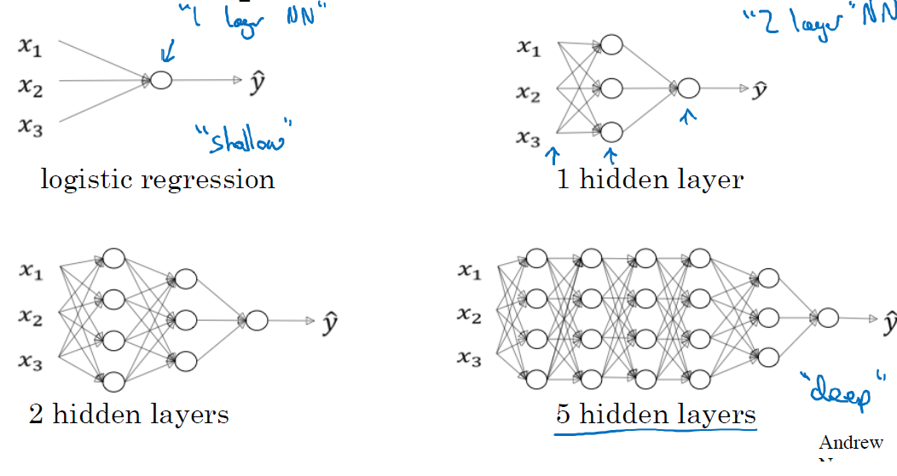
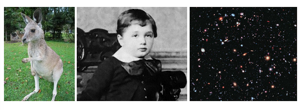
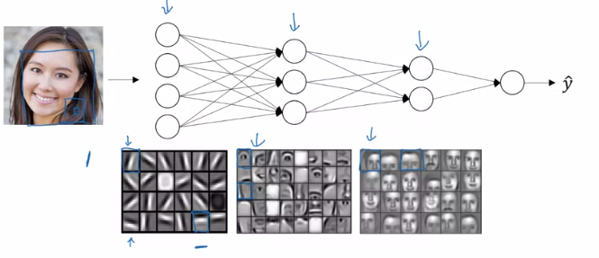

Introduction to Deep Learning
Towards Deep Learning
When one looks at how the concept of Neural Network is built, it is clear that it is characterized (accompanied) by an increase in complexity, that is the number of neurons, layers and connexions.
However, the real shift, when going from shallow to deep neural networks, is not (only) the number of layers. This is mainly because, very often, Deep NNs do not have so many hidden layers that per se would justify the term deep.
The difference came rather from realizing, as happened at some point, that while some tasks as digit recognition, could be solve decently well using a “brute force” approach, for instance, with a NN on the pixels of the images other more complex tasks, such as distinguishing a human face in an image, where hard to solve witht that “brute” force approach.

This problem can be attacked as the digit recognition proble, with an output of “yes” and “no”, although the cost of training the network would be much higher.
An alternative approach may be to try to solve the problem hierarchically.
- We start by tying to find edges in the figure
- In the parts with edges we “look around” to find face pieces, a nose, an eye, an eyebrow …
- As we locate the pieces we look for their optimal combination.
Each layer has a more complex task, but it receives better information.The rationale underlying this idea is that, if we can solve the sub-problems using neural networks, then perhaps we can build a neural network for face-detection, by combining the networks for the sub-problems.
If we are able to break the questions down, further and further through multiple layers we end-up working with sub-networks that answer questions so simple they can easily be answered at the level of single pixels.

According to Michael Nielsen this results in networks that break down complicated questions, such as “does the image show a face”, into much simpler questions answerable at the level of single pixels.
It does this through a series of many layers, with early layers answering very simple and specific questions about the input, and later layers building up a hierarchy of ever more complex and abstract concepts.
Networks with this kind of many-layer structure - two or more hidden layers - are called deep neural networks.
Automatic tuning
In order for these networks to succeed it is important not having to hand-craft the complicated structure of weights and biases required for such hierarchy of layers and functions.
It was not until 2006 that techniques enableing learning in deep neural nets were developed. These deep learning techniques are based on stochastic gradient descent and backpropagation, but also introduce new ideas.
It turns out that equiped with such techniques, deep neural networks perform much better on many problems than shallow neural networks. The reason, of course, is the ability of deep nets to build up a complex hierarchy of concepts.

Convolutional Neural networks
How and What do computers see
Computer vision is an exciting field, which has evolved quickly thanks to deep learning. Researchers in this area have been experimenting many neural-network architectures and algorithms, which have influenced other fields as well. In computer vision, images are the training data of a network, and the input features are the pixels of an image. These features can get really big. For example, when dealing with a 1megapixel image, the total number of features in that picture is 3 million (\(=1000\times 1000 \times 3\) color channels). Then imagine passing this through a neural network with just 1000 hidden units, and we end up with some weights of 3 billion parameters! These numbers are too big to be managed, but, luckily, we have the perfect solution: Convolutional neural networks (CNN), see Figure 1.
{r, fig.align='center', out.width='100%', fig.cap='Source: Generative Deep Learning. David Foster (Fig. 2.13)'}\nknitr::include_graphics(\"
There are 3 main types of layers in a convolutional network:
- Convolution (CONV)
- Pooling (POOL)
- Fully connected (FC)
Convolutional Layer
A “convolution” is one of the building blocks of the Convolutional network. The primary purpose of a “convolution” in the case of a CNN is to extract features from the input image (Fig. 2).
Every image can be represented as a matrix of pixel values. An image from a standard digital camera will have three channels: red, green and blue. You can imagine those as three 2d-matrices stacked over each other (one for each color), each having pixel values in the range 0 to 255.
Applying a convolution to an image is like running a filter of a certain dimension and sliding it on top of the image. That operation is translated into an element-wise multiplication between the two matrices and finally an addition of the multiplication outputs. The final integer of this computation forms a single element of the output matrix. Let’s review this via an example, where we want to apply a filter (kernel) to detect vertical and horizontal edges from a 2D original image (Fig. 3).

In this example, we used a value of a stride equal to 1, meaning the filter moves horizontally and vertically by one pixel (see Figure 4).

In this example the values of the filter were already decided in the convolution. The goal of a convolutional neural network is to learn the values in the filters. We treat them as weights of the neural network, which the network learns from data using backpropagation.
You might be wondering how to calculate the output size, based on the filter dimensions and the way we slide it though the image. We will get to the formula, but first We want to introduce a bit of terminology.
You saw in the earlier example how the filter moved with a stride of 1 and covered the whole image from edge to edge. This is what it’s called a valid convolution since the filter stays within the borders of the image.
However, one problem quickly arises. When moving the filter this way we see that the pixels on the edges are “touched” less by the filter than the pixels within the image. That means we are throwing away some information related to those positions. Furthermore, the output image is shrinking on every convolution, which could be intentional, but if the input image is small, we quickly shrink it too fast.
A solution to those setbacks is the use of padding. Before we apply a convolution, we pad the image with zeros all around its border to allow the filter to slide on top and maintain the output size equal to the input. The result of padding in the previous example will be (Figure 5).

Padding will result in a same convolution. We talked about stride, which is essentially how many pixels the filter shifts over the original image. Great, so now We can introduce the formula to quickly calculate the output size, knowing the filter size (\(f\)), stride (\(s\)), pad (\(p\)), and input size (\(n\)):
Output size
\[ \Big(\frac{n+2p-f}{s}+1\Big)\times \Big(\frac{n+2p-f}{s}+1\Big) \]
Keep in mind that the filter size is usually an odd value, and if the fraction above is not an integer you should round it down.
The previous example was on a 2D matrix, but we mentioned earlier that images are composed of three channels (R-red, G-green, B-blue). Therefore the input is a volume, a stack of three matrices, which forms a depth identified by the number of channels. If we apply only one filter the result would be (Figure 6), where the cube filter of 27 parameters now slides on top of the cube of the input image.

So far we have only applied one filter at a time, but we can apply multiple filters to detect several different features. This is what brings us to the crucial concept for building convolutional neural networks. Now each filter brings us its own output We can stack them all together and create an output volume, such as, see Figures 7, 8 and 9.

Therefore, in general terms we have:
Input: \((n \times n \times n_c)\)
Filter: \((f \times f \times n_c)\)
Output: \(\Big(\big(\frac{n+2p-f}{s}+1\big)\times \big(\frac{n+2p-f}{s}+1\big)\times n'_c\Big)\)
(with \(n'_c\) as the number of filters, which are detecting different features)
One-layer of a convolutional neural network
The final step that takes us to a convolutional neural layer is to add the bias and a non-linear function (Figure 10).

Remember that the parameters involved in one layer are independent of the input size image. So let’s consider, for example, that we have \(10\) filters that are of size \(3\times 3\times 3\) in one layer of a neural network. Each filter has \(27\) \((=3\times 3\times 3) + 1\) bias \(=> 28\) parameters. Therefore, the total amount of parameters in the layer is 280 (\(10\times 28\)).
This means that all the neurons in the first hidden layer detect exactly the same feature, just at different locations in the input image. To see why this makes sense, suppose the weights and bias are such that the hidden neuron can pick out, say, a vertical edge in a particular local receptive field. That ability is also likely to be useful at other places in the image. And so it is useful to apply the same feature detector everywhere in the image. To put it in slightly more abstract terms, convolutional networks are well adapted to the translation invariance of images: move a picture of a cat (say) a little ways, and it’s still an image of a cat.
For this reason, we sometimes call the map from the input layer to the hidden layer a feature map. We call the weights defining the feature map the shared weights. And we call the bias defining the feature map in this way the shared bias. The shared weights and bias are often said to define a kernel or filter (Figures 11 and 12, also link to https://pathmind.com/wiki/convolutional-network).


Deep Convolutional Network
We are now ready to build a complete deep convolutional neural network. The following architecture depicts a simple example of that (Figure 13)

Pooling Layers
There are two types of pooling layers: max and average pooling. Max pooling We define a spatial neighborhood (a filter), and as we slide it through the input, we take the largest element within the region covered by the filter.
We can think of max-pooling as a way for the network to ask whether a given feature is found anywhere in a region of the image. It then throws away the exact positional information. The intuition is that once a feature has been found, its exact location isn’t as important as its rough location relative to other features. A big benefit is that there are many fewer pooled features, and so this helps reduce the number of parameters needed in later layers (Figure 14).

Average pooling
As the name suggests, it retains the average of the values encountered within the filter. One thing worth noting is the fact that a pooling layer does not have any parameters to learn. Of course, we have hyper-parameters to select, the filter size and the stride (it’s common not to use any padding).
Fully Connected Layer
A fully connected layer acts like a “standard” single neural network layer, where you have a weight matrix W and bias b. We can see its application in the following example of a Convolutional Neural Network. This network is inspired by the LeNet-5 network (Figure 15).
It’s common that, as we go deeper into the network, the sizes (nh, nw) decrease, while the number of channels (nc) increases.
Another common pattern you can see in neural networks is to have CONV layers, one or more, followed by a POOL layer, and then again one or more CONV layers followed by a POOL layer and, at the end, a few FC layers followed by a Softmax.
When choosing the right hyper-parameters (f, s, p, ..), look at the literature and choose an architecture that was successfully used and that can apply to your application. There are several “classic” networks, such as LeNet, AlexNet, VGG,
These networks are normally used in transfer learning, where we can use the weights coming from the existing trained network and then replace the output unit, since training such a big network from scratch would require a long time otherwise.

CNN definition in Keras
library(keras)
model <- keras_model_sequential() %>%
layer_conv_2d(filters = 6, kernel_size = c(5, 5), strides = 1, padding = "valid",
activation = "relu",input_shape = c(32, 32, 3)) %>%
layer_max_pooling_2d(pool_size = c(2, 2)) %>%
layer_conv_2d(filters = 16, kernel_size = c(5, 5), strides = 1, padding = "valid",
activation = "relu") %>%
layer_max_pooling_2d(pool_size = c(2, 2)) %>%
layer_flatten() %>%
layer_dense(units = 120, activation = "relu") %>%
layer_dense(units = 84, activation = "relu") %>%
layer_dense(units = 1, activation = "softmax")summary(model)